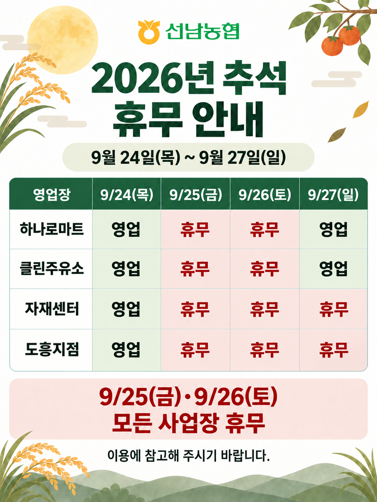

2026년 추석
휴무 안내
9월 24일(목) ~ 9월 27일(일)
풍요롭고 따뜻한 한가위 보내세요.
9/25(금) · 9/26(토)
모든 사업장 휴무
사업장별 영업 일정
| 영업장 | 9/24목 | 9/25금 | 9/26토 | 9/27일 |
|---|---|---|---|---|
| 하나로마트 | 영업 | 휴무 | 휴무 | 영업 |
| 클린주유소 | 영업 | 휴무 | 휴무 | 영업 |
| 자재센터 | 영업 | 휴무 | 휴무 | 휴무 |
| 도흥지점 | 영업 | 휴무 | 휴무 | 휴무 |
※ 영업일의 상세 운영시간은 해당 사업장에 문의해 주세요.
사업장 문의
안내문 원본 보기

이용에 참고해 주시기 바랍니다.
선남농협